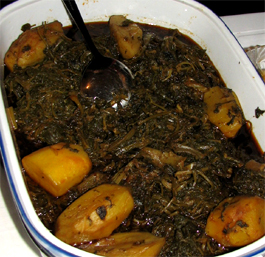

Λάχανα Τσιγαρέλι

Το τσιγαρέλι είναι διάφορα τσιγαριστά χόρτα που φτιάχνουνε κυρίως στη Κέρκυρα κατά τη διάρκεια της Σαρακοστής. Και όπως στις περισσότερες συνταγές των νησιών του Ιονίου έτσι και στο τσιγαρέλι χρησιμοποιείται καυτερό κόκκινο πιπέρι.
Λέγεται και το φαγητό των φτωχών. Πρόκειται όμως για μια πιο νόστιμη και πικάντικη εκδοχή των άγριων χόρτων που μάζευαν και συνήθιζαν να τα τρώνε νερόβραστα με λάδι και λεμόνι.
Οι Κερκυραίοι κατά βάση χρησιμοποιούσαν για το καθημερινό τους τραπέζι ό,τι έβγαζε το χωράφι τους πότε – πότε σε συνδυασμό με ό,τι ψάρευαν και πιο σπάνια (μάλλον μόνο τις γιορτές) με κρέας.
Τα φρέσκα άγρια χόρτα και βότανα, οι πατάτες, τα ζυμαρικά (δηλ. η μανέστρα -από τα ελάχιστα τυποποιημένα υλικά της τότε κουζίνας), τα όσπρια και κάποιες φορές το ψάρι (πολύ συχνή η χρήση του παστού μπακαλιάρου), μαγειρεμένα πάντα με ελαιόλαδο αποτελούσαν τη βάση της Κερκυραϊκής διατροφής τα παλιότερα χρόνια.
Υλικά
- 1 κιλό σέσκουλα (ή παντζάρια ή σπανάκι) ψιλοκομμένα
½ κιλό αντίδια σγουρά, ψιλοκομμένα
- 2 πράσα, κομμένα (εναλλακτικά μπορείτε να χρησιμοποιήσετε φρέσκα κρεμμυδάκια)
- 2 ή περισσότερα κοτσάνια φρέσκα σκόρδα (αν υπάρχουν) ή 3 σκελίδες ξερά σκόρδα, ψιλοκομμένα
- 2-3 κουταλιές της σούπας ελαιόλαδο
- 3-4 κουταλιές της σούπας φρέσκος ψιλοκομμένος άνηθος ή 2 κουταλιές αποξηραμένος
- 2 μικρές πατάτες, κομμένες σε λεπτές φέτες
- 2 κουταλιές πιπέρι καγιέν
μαύρο τριμμένο πιπέρι κατ επιλογή
αλάτι κατ επιλογή"
Εκτέλεση
- Βράζετε νερό σε μία κατσαρόλα αρκετά μεγάλη ώστε να χωράει τα λαχανικά, προσθέτετε αλάτι (προαιρετικά), τα σέσκουλα και τα αντίδια. Όταν ο όγκος τους μειωθεί ύστερα από 5 λεπτά περίπου, τα σουρώνετε στο τρυπητό, όπως κάνετε και με τα μακαρόνια, αλλά κρατάτε λίγο ζουμί.
- Εν συνεχεία, τσιγαρίζετε τα πράσα (και-ή-τα φρέσκα κρεμμύδια) και το σκόρδο σε ελαιόλαδο, προσθέτετε τα μισοβρασμένα λαχανικά, το δυόσμο και τον άνηθο μαζί με τις κομμένες πατάτες, και ανακατεύετε καλά. Ρίχνετε το ζουμί των λαχανικών που έχετε φυλάξει. Προσθέτετε το καγιέν, το μαύρο πιπέρι και το αλάτι, ανακατεύετε, σκεπάζετε και αφήνετε να σιγοβράσουν για 30 περίπου λεπτά, μέχρι να πιει το μεγαλύτερο μέρος του νερού. Ανακατεύετε ανά διαστήματα για να μην κολλήσουν τα λαχανικά, προσθέτοντας, αν χρειαστεί, νερό.
Back to index